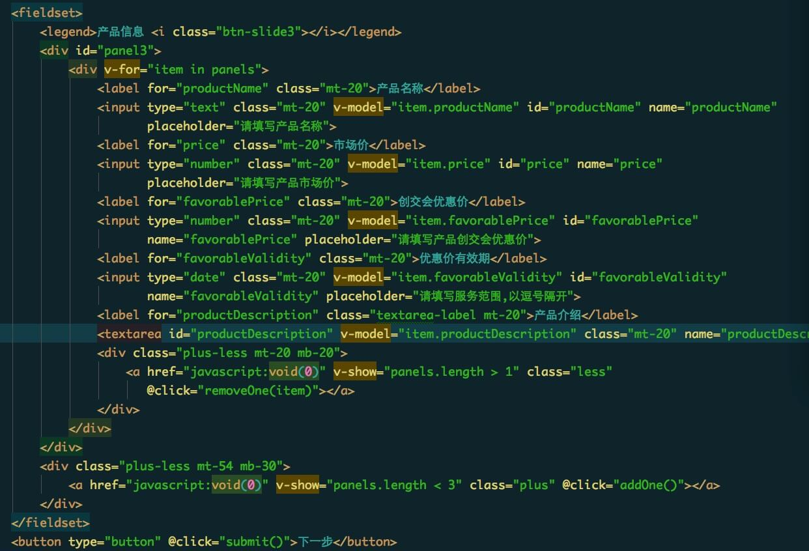

起初这个项目一共有19个页面,后来由于产品经理说用户交完定金后,有四个展示页面,需要合成一个页面,然后通过滑动来展示每一页的内容,所以到了 上线的时候,总共是16个页页。
flexible主要是为了实现多终端的适配,用法有个重要点:
1,flexible实际上就是通过JS来动态改写meta标签,给<html>元素添加data-dpr属性，并且动态改写data-dpr的值, 给<html>元素添加font-size属性，并且动态改写font-size的值
2,把视觉稿中的px转换成rem,假如设计稿的宽度是750px,以75为一等份,现在有一个button的宽度是60px,就用60/75=0.8,那么,在css代码里面, button的宽度就是0.8rem,其他的元素也是以同样的方式去运算,不过网上有一些方法可以专门将px转换成rem,在下面的内容中,我也介绍了一个。可以供各位参考一下。
注意: 字体需要特殊处理一下,超大标题还好办,如果是文字介绍类的,就不要使用rem了,因为换算出来后,字体大小的数字不便有很多的小数点,而且字体也会因为 奇奇怪怪的数字而显示的不清晰。所以字体还是继续使用px,并配合用data-dpr属性来区分不同dpr下的的大小。
但是,注意但是,我用了data-dpr后在iphone4、iphone5、iphone6上显示的字体有的时候会非常的大,因为他们的dpr都是2,而iphone6plus的dpr都是3, 什么意思呢? 假如,有一个元素默认的字体大小(data-dpr="1"的时候)是12px,当到了data-dpr="2"的手机上显示时是24px,当到了data-dpr="3"的手机上显示时是36px, 这个时候就会出现问题,在iphone4、iphone5这种虽然data-dpr="2"的手机上,屏幕很小,但字体却是24px,因此看到的就是字体过大,太过突出,效果不太好。而很多 Android机data-dpr="1",但是屏幕就比较大,看着还行。
以上这个问题困扰了我好久,最后我只能尽量把字体调成各种不同手机都显示的还能接受,没有通过其他什么技术来解决这个问题,只是不停的测试各种手机,在字号上做调整。
下面是一个font-dpr()的Sass混合宏
@mixin font-dpr($font-size){
font-size: $font-size;
[data-dpr="2"] & {
font-size: $font-size * 2;
}
[data-dpr="3"] & {
font-size: $font-size * 3;
}
}
下面是将px转换成rem的一个Sass混合宏
@mixin px2rem($property,$px-values,$baseline-px:75px,$support-for-ie:false){
//Conver the baseline into rems
$baseline-rem: $baseline-px / 1rem * 1;
//Print the first line in pixel values
@if $support-for-ie {
#{$property}: $px-values;
}
//if there is only one (numeric) value, return the property/value line for it.
@if type-of($px-values) == "number"{
#{$property}: $px-values / $baseline-rem;
}
@else {
//Create an empty list that we can dump values into
$rem-values:();
@each $value in $px-values{
// If the value is zero or not a number, return it
@if $value == 0 or type-of($value) != "number"{
$rem-values: append($rem-values, $value / $baseline-rem);
}
}
// Return the property and its list of converted values
#{$property}: $rem-values;
}
}
也可以用下面的function
@function px2em($px, $base-font-size: 16px) {
@if (unitless($px)) {
@warn "Assuming #{$px} to be in pixels, attempting to convert it into pixels for you";
@return px2em($px + 0px); // That may fail.
} @else if (unit($px) == em) {
@return $px;
}
@return ($px / $base-font-size) * 1em;
}
下面是flexible学习或下载的两个连接
使用Flexible实现手淘H5页面的终端适配在这个项目中,有三个页面都有表单,起初,我自己在前端用validate做了表单验证,后来,后台的人说他们用微信开发中自带的方式去验证,不需要我在前端验证, 所以,后来写的所有代码都删掉了,非常可惜,不过我自己还是整理了一下,单独拿出来,放在自己的github上,或许以后工作中用的上呢。
在用validate有两个地方非常重要,不得不说一下。
第一个地方: 我下载的这个validate默认的错误提示是英文的,需要再下载一个messages_zh.js文件,并引入到页面中,提示文字就变成中文的了,当然,你还必须在这个 js文件的最上方加入下面这段代码。
(function (factory) {
if (typeof define === "function" && define.amd) {
define(["jquery", "../jquery.validate"], factory);
} else {
factory(jQuery);
}
}(function ($) {
/*
* Translated default messages for the jQuery validation plugin.
* Locale: ZH (Chinese, 中文 (Zhōngwén), 汉语, 漢語)
*/
$.extend($.validator.messages, {
required: "这是必填字段",
// remote: "请修正此字段",
// email: "请输入有效的电子邮件地址",
// url: "请输入有效的网址",
date: "请输入有效的日期",
// dateISO: "请输入有效的日期 (YYYY-MM-DD)",
number: "请输入有效的数字",
digits: "只能输入数字",
rangelength: $.validator.format("请输入长度在 {0} 到 {1} 之间的字符串")
});
}));
extend中的中文提示可以根据需要自己编辑。
第二个地方,虽然你在js代码中做了以下配置,但是这些代码中并没有对手机号码、微信号码等等需要严格限制的项做正则表达式的匹配。 因此你需要额外加上正则表达式的匹配。
$(document).ready(function() {
$("#registerForm").validate({
rules: {
userName:{ // 姓名
rangelength:[2,20],
required: true
},
email:{ // 邮箱
email:true,
required: true,
isEmail: true
},
weChat:{ // 微信
rangelength:[1,20],
required: true,
isWeChat: true
},
post:{ // 职位
rangelength:[1,20],
required: true
},
phone:{ // 手机号
digits:true,
required: true,
phoneCount: true
},
......
productDescription:{ //产品介绍
rangelength:[5,500],
required: true
}
},
messages: {
userName:{ // 姓名
rangelength: "输入长度必须介于 2 和 20 之间的字符串（汉字算一个字符）。"
},
email:{ // 邮箱
email:"请输入正确格式的电子邮件。"
},
weChat:{ // 微信
rangelength: "输入长度必须介于 1 和 20 之间的字符串（汉字算一个字符）。"
},
post:{ // 职位
rangelength: "输入长度必须介于 1 和 20 之间的字符串（汉字算一个字符）。"
},
phone:{ // 手机号
digits: "请输入正确的手机号"
},
......
productDescription:{ //产品介绍
rangelength: "输入长度必须介于 5 和 500 之间的字符串（汉字算一个字符）。"
}
}
});
});
因此,你需要下载一个additional-methods.js的文件,并且,在这个文件中写自己需要额外添加的验证,例如:
$.validator.addMethod("phoneCount", function(value, element) {
var tel = /(^(13\d|15[^4,\D]|17[13678]|18\d)\d{8}|170[^346,\D]\d{7})$/;
return this.optional(element) || (tel.test(value));
}, "请正确填写您的真实手机号码。");
$.validator.addMethod("isEmail", function(value, element) {
var tel = /^[0-9a-zA-Z]+@(([0-9a-zA-Z]+)[.])+[a-z]{2,4}$/i;
return this.optional(element) || (tel.test(value));
}, "请正确填写您的邮箱地址。");
$.validator.addMethod("isWeChat", function(value, element) {
var tel = /^[a-zA-Z\d_]{5,}$/;
return this.optional(element) || (tel.test(value));
}, "请正确填写您的微信号。");
以上这些都只是做了验证,但没有写样式,所以具体样式可以根据自己的情况来添加。
下面是validate的下载链接
官方提供的github下载地址
jQuery Validation Plugin - Form validation made easy官网
jQuery Validation Plugin教程地址
jQuery Validate之所以会用到PageSlider,就是最开始所提到的,把四个单独的页面合并为一个页面,通过滑屏来展示内容
PageSlider使用方法非常简单,首先就是下载插件的js代码,然后引入到页面中,在需要滑动的各个页面上添加指定的类名,然后在js中加入简单的 几句js代码来进行配置就OK了,是不是很简单呢?
下载地址:
PageSlider -- 移动端滑屏组件由于上面的地址中已经介绍的非常清楚了,我就不多啰嗦了。下面是在我自己的项目中添加的js代码,供大家参考一下
var PageSlider = new PageSlider({
pages: $('.page-wrap .page'),
gestureFollowing: true,
animationPlayOnce: true
});
$('.arrow').on('tap', function () {
PageSlider.next();
});
这次之所以会在项目中使用Vue,主要是因为有一个表单页中有一个需求,每个用户只能展示三个产品,表单页面中默认会显示一组填写框,如下图
需求刚一出来的时候,我是打算用jQuery来写,好在身边有技术比较牛的朋友,他对vue很熟,一听到这个需求就建议我用vue写,因此,在他的帮助 和指导下,就完美的实现了这个需求,不但让我体验了一把vue的快、轻、爽,而且实现过程一点困难都没有遇到,爱上vue了。
直接看代码吧。
首先,必须要引用vue.min.js,当然,你也可以使用开发版本,或者最新发布的版本号。
之所以会用sassCore,也只是想给自己增加难度,用一些自己之前没有用过的东西,而sassCore提供了一些基础和常用的东西，基于它你可以扩展出很多组件等,不但可以节省开发时间, 还可以通过这个更深入的了解sass,所以就用了。刚刚研究的时候感有点摸不碰着头脑,后来大胆的使用了后,其他跟我们平常用sass是一样的,所以 后面就没有什么难度了,应用起来非常的流畅。
教程地址:
sassCore 3.0——Just for Better模版下载页面:
模版下载代码下载页面:
sassCore